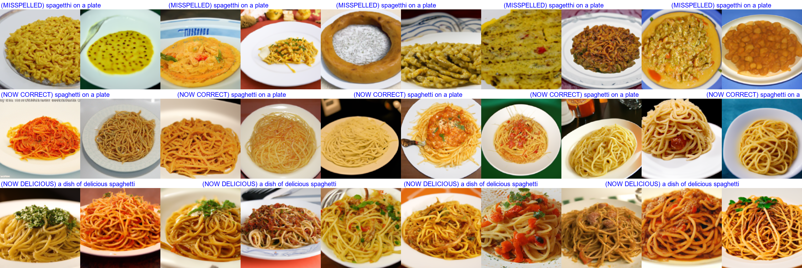
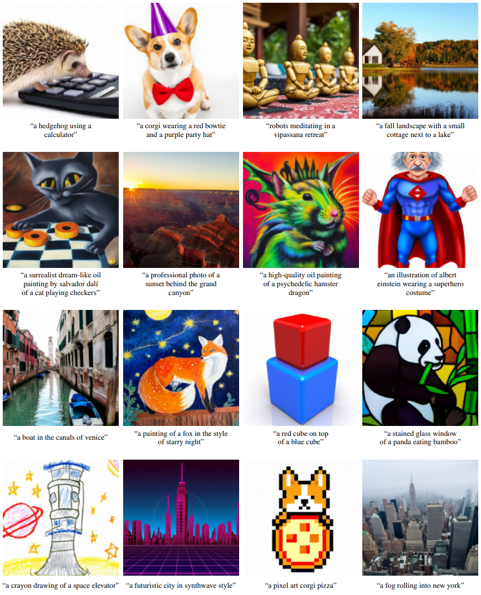

You probably know that a computer can describe an image. For example an image of a dog playing with your kids may be translated into ‘dog and children in garden’.
But did you know the other way around is now also possible? You come up with a text and the computer renders a new image. Completely new, not like a Google search which searches existing images.
OpenAI has been one of the premier organisations publishing spectacular results in the past years. They train their models on huge datasets of texts and images. They released a paper on their GLIDE image model, trained on several hundred million images. It outperforms their previous ‘DALL-E’ model in terms of photorealism.
They also open-sourced a slimmed down version of their model. I played around with it by coming up with text prompts and let the model generate 10 images for each promt.
Below the results. Zoom in on pc with ctrl+mousewheel or on mobile with your fingers. I repeat the text above the images keep it readable while zoomed in.

What do you think? Some things I noticed: * The more complex prompts sometimes are only partially fulfilled. For example: a monkey looking at itself in the mirror often does not render the mirror. * The representation sometimes is off, for example the secondright rubber ducky. * The model can be quite wide in it’s approach. When you think of a ‘map of a city’, you probably have 1 type of map in your head. The model generates all sorts of types of maps, all believable
I also had a culinary adventure: Tried out ‘spagetthi on a plate’ but got results that didn’t look like somethink I’d like to consume… Turned out I misspelled it (should be spaghetti) and the corrected text looked much better. To finish it off, I tried to make it “delicious” and worked out pretty nicely, often the spaghetti get’s some vegetables on top. So next time you order spaghetti in a restaurant, make sure to spell it right!

The full GLIDE model is larger and also is trained on images of people. See these impressive examples from the paper:

This clearly is a disruption to the stock photo business and does have a wide variety of use cases.
At this point AI can generate believeable news articles including images that are completely false. Still though, many experts feel that we are currently a long way from Artifical General Intelligence and the current deep learning architectures may not get us to AGI.
To me, that doesn’t make these ‘narrow’ intelligence less impressive. Hope you enjoyed it!
There are even more examples in the paper, check it out! And in case you can’t get enough, I’ve got even more examples
{kind=link}